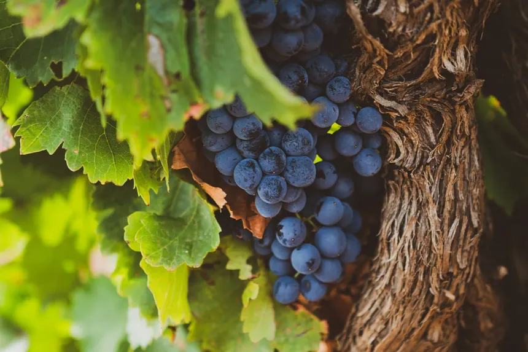

GARNACHA
Descubre su Esencia
Descubre su Esencia
Nuestra uva Garnacha respira la esencia de una tierra forjada por el sol y el cierzo. Viñas viejas de escasa producción que hunden sus raíces en pedregales para extraer el alma concentrada de la fruta.
Un vino indomable, de intenso color rubí, donde explotan los frutos rojos maduros entrelazados con sutiles notas especiadas y un final redondo que abraza el paladar.

Color rojo cereza intenso con ribetes violáceos, capa media-alta, limpio y muy brillante.
Aromas potentes a frutos rojos silvestres, toques florales y un fondo mineral único de nuestro terruño.
Entrada golosa, tanino pulido y sedoso, con una excelente acidez que le aporta frescura y largo recorrido.